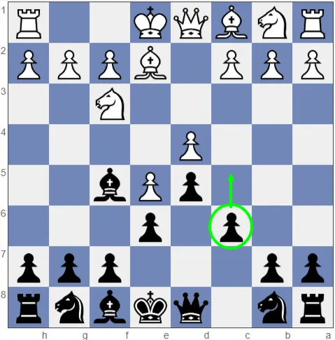

A Defesa Caro-Kann é uma das defesas mais conhecidas do xadrez e é utilizada pelas pretas principalmente contra o movimento 1. e4. Ela começa com 1. e4 c6 2. d4 d5, quando as pretas preparam o avanço do peão para d5 com o objetivo de disputar o controle do centro. A principal característica da Caro-Kann é sua solidez. As pretas procuram construir uma posição segura, desenvolver suas peças de maneira eficiente e evitar algumas das dificuldades encontradas em outras defesas contra 1. e4. O bispo de c8 também pode ser desenvolvido antes de o peão de e6 ser colocado em seu lugar, permitindo maior liberdade para essa peça. Existem diversas variantes da Defesa Caro-Kann, como a Variante do Avanço, a Variante das Trocas, a Variante Clássica e a Variante Panov. Por combinar segurança defensiva com boas oportunidades de contra-ataque, a Caro-Kann é muito utilizada por jogadores de diferentes níveis e também aparece em partidas de grandes mestres.